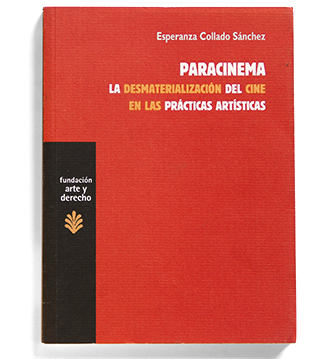

|
 |
Paracinema. La desmaterialización del cine en las prácticas artísticas
VII Premio "Escritos sobre Arte"
Fundación Arte y Derecho Madrid
Introducción de Armando Montesinos
136 pgs
ISBN 978-84-92755-57-8
Trama Madrid 2012
|
"Mediante una escritura segura y ágil, que anuda sólidas referencias y citas a fugaces momentos históricos, una voz firme funda su análisis teórico en la lectura de obras –llamarlas películas sería mantener una nomenclatura que no las contiene– escasamente conocidas y de los gestos de fuerte radicalidad que las produjeron. No defiende una hipótesis, sino que da cuenta, con autoridad, de un linaje de prácticas artísticas que la historia del arte y la historia del cine han venido ignorando."
Armando Montesinos
Reseñas:
→ Cine sin cine (Érik Bullot)
→ Paracinema (Fernando Huerta)
→ Excerpt in English (Experimental Conversations Journal)
→ comprar / purchase |
|